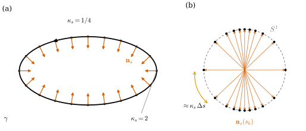
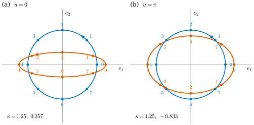

39.1 The Weingarten Map
Goals
- plane curve의 curvature가 “normal이 도는 빠르기”이기도 하다는 것에서 출발해, surface의 굽음을 Gauss map의 differential \(d\mathbf{N}\)으로 재는 이유를 설명할 수 있다.
- \(d\mathbf{N}\)(\(\R^3\)-valued 1-form), shape operator \(W = -d\mathbf{N}\)(tangent plane의 linear map), 그 coordinate matrix \(\mathsf{W} = \mathsf{g}^{-1}\mathsf{h}\) 사이를 오가며 계산할 수 있다.
- \(W\)가 induced metric에 대해 self-adjoint라는 것을 \(\langle d\mathbf{N}\wedge d\mathbf{x}\rangle = 0\)으로 증명하고, \(\mathsf{W}\)가 symmetric matrix가 아닐 수 있다는 것을 예로 확인할 수 있다.
- running example의 \(W\)를 normal의 방향과 함께 구하고, Crane의 Weingarten map, shape operator와 부호를 대응시킬 수 있다.
Prerequisites
- Chapter 38: immersion Definition 38.1.6, Proposition 38.1.7, induced metric의 행렬 \(\mathsf{g}\) Proposition 38.2.2, Gauss map Definition 38.3.1, Example 38.3.2, \(d\mathbf{N}\)이 tangent라는 것 Proposition 38.3.3, Example 38.3.4.
- vector-valued form의 wedge Definition 35.5.12, (35.5.5), exterior derivative Proposition 35.5.16.
- plane curve의 signed curvature Definition 4.4.2와 \(\mathbf{n}_s' = -\kappa_s\mathbf{t}\)(Proposition 32.2.4의 증명).
- Track 3에서 상기할 것: shape operator Definition 8.1.12, self-adjoint Definition 8.1.6, Theorem 8.1.10, Weingarten equations Proposition 8.5.4.
Motivation
Section 38.3에서 Gauss map \(\mathbf{N}\)의 differential \(d\mathbf{N}\)은 값이 언제나 tangent plane에 있는 \(\R^3\)-valued 1-form임을 보였다(Proposition 38.3.3). torus에서는 그 coefficient까지 구했지만(Example 38.3.4) 그것을 curvature로 읽는 일은 남겨 두었다. Chapter 38은 “surface는 방향마다 얼마나 굽는가?”라는 질문으로 끝났다.
곡선에서 curvature는 tangent가 도는 빠르기였다(Chapter 32, Chapter 37). 그런데 plane curve에서는 normal이 tangent에 수직이므로, normal이 도는 빠르기도 같은 수를 준다. surface로 오면 사정이 달라진다. tangent 방향은 한 점에서 평면 하나만큼 있어서 “그 tangent”가 없다. 반면 normal 방향은 여전히 하나다. 그래서 surface의 굽음은 normal이 어떻게 변하는지로 잰다 [CMU-DDG L15]. 이 절은 그 변화를 tangent plane의 linear map 하나로 묶는다. 그 map의 eigenvalue가 Section 39.2의 principal curvature, determinant와 trace가 Section 39.3의 Gaussian curvature와 mean curvature다.
From Curves to Surfaces
arc length로 매개화한 plane curve에서 signed unit normal은 \(\mathbf{n}_s = J\mathbf{t}\)이고 \(\mathbf{t}' = \kappa_s\mathbf{n}_s\)이다(Definition 4.4.2). 이것을 미분하면 \(\mathbf{n}_s' = J\mathbf{t}' = -\kappa_s\mathbf{t}\)이다(Proposition 32.2.4의 증명). 같은 수 \(\kappa_s\)가 두 번 나온다. tangent는 normal 쪽으로 \(\kappa_s\)의 빠르기로 돌고, normal은 tangent의 반대쪽으로 같은 빠르기로 돈다. 일반 parameter의 곡선 \(\gamma\colon I \to \R^2\)에서는 둘 다 \(\abs{\gamma'}\)배가 되므로, 1-form으로 쓰면
이다. 곧 normal의 differential은 position의 differential에 \(-\kappa_s\)를 곱한 것이다. 1차원 tangent line 위에서 “\(-\kappa_s\)를 곱하는 linear map”이 곡선의 굽음을 담는다. Section 8.1의 Looking back 상자도 같은 관찰에서 shape operator로 넘어간다(Section 8.1).
Example 39.1.1 (the ellipse). running example의 ellipse \(\gamma(t) = (2\cos t, \sin t)\)를 반시계 방향으로 돈다. \(\gamma' = (-2\sin t, \cos t)\), \(\gamma'' = (-2\cos t, -\sin t)\)이므로
\[ \begin{aligned} \kappa_s &= \frac{x'y'' - y'x''}{\abs{\gamma'}^3} = \frac{2\sin^2t + 2\cos^2t}{(4\sin^2t + \cos^2t)^{3/2}} \\ &= \frac{2}{(4\sin^2t + \cos^2t)^{3/2}} \end{aligned} \]
이다. 긴 축의 끝 \((\pm 2, 0)\)(\(t = 0, \pi\))에서 \(\kappa_s = 2\), 짧은 축의 끝 \((0, \pm 1)\)에서 \(\kappa_s = 1/4\)이다. \(\mathbf{n}_s = J\gamma'/\abs{\gamma'} = -(\cos t, 2\sin t)/\abs{\gamma'}\)을 직접 미분하면 \(d\mathbf{n}_s = -\kappa_s\gamma'\,dt = -\kappa_s\,d\gamma\)가 나온다((39.1.1)).
Verification: verify/v-39-1-weingarten-map.py
Figure 39.1.1로 이것을 보자. 왼쪽 (a)에서 검은 ellipse 위에 arc length가 같은 간격인 20개의 점을 찍고, 각 점에 주홍 화살표로 \(\mathbf{n}_s\)를 그렸다. 오른쪽 (b)는 같은 화살표들을 원점에서 다시 그린 것이다. 끝점들이 단위원 \(S^1\) 위에 놓인다. 이것이 곡선의 Gauss map이다. 이제 (b)의 점 간격을 보자. 왼쪽과 오른쪽(곧 (a)의 \((\pm 2, 0)\) 근처의 normal)에서는 간격이 넓고, 위와 아래(곧 \((0, \pm 1)\) 근처)에서는 점이 몰려 있다. arc length가 같은 \(\Delta s\)만큼 가는 동안 normal이 도는 각이 대략 \(\kappa_s\Delta s\)이기 때문이다. 주황 호가 가장 넓은 간격 \(0.762\) rad이고, 가장 좁은 간격은 \(0.124\) rad이다.

The Weingarten Map
이제 immersion \(\mathbf{x}\colon U \to \R^3\)(\(U \subseteq \R^2\) open)과 그 Gauss map \(\mathbf{N} = \mathbf{x}_u\times\mathbf{x}_v/\abs{\mathbf{x}_u\times\mathbf{x}_v}\)를 보자(Definition 38.3.1). 점 \(q\)에서 방향 \(X \in \R^2\)로 움직이면 위치는 \(d\mathbf{x}_q(X)\)의 빠르기로, normal은 \(d\mathbf{N}_q(X)\)의 빠르기로 변한다. 둘 다 tangent plane \(d\mathbf{x}_q(\R^2)\) 안의 vector이고(Proposition 38.3.3), \(d\mathbf{x}_q\)는 injective다. 그러므로 normal의 변화를 position의 변화로 다시 적을 수 있다. (39.1.1)에서 \(-\kappa_s\)라는 수가 하던 일을 이제 \(2\times 2\) 행렬이 한다.
Proposition 39.1.2 (the Weingarten map in coordinates). \(\mathbf{x}\colon U \to \R^3\)이 immersion이고 \(\mathbf{N}\)이 그 Gauss map이라 하자.
- (a) 각 \(q \in U\)에서 \(-d\mathbf{N}_q = d\mathbf{x}_q\circ\mathsf{W}_q\)인 linear map \(\mathsf{W}_q\colon \R^2 \to \R^2\)가 꼭 하나 있다. \(\R^3\)-valued 1-form으로 쓰면
- (b) standard basis \((\partial_u, \partial_v)\)에 대한 \(\mathsf{W}_q\)의 행렬(같은 문자 \(\mathsf{W}\)로 쓴다)은 다음과 같고 \(q\)에 대해 smooth하다. 여기서 \(\mathsf{g}\)는 induced metric의 행렬(Proposition 38.2.2)이고 \((\mathbf{x}_1, \mathbf{x}_2) = (\mathbf{x}_u, \mathbf{x}_v)\), \((\mathbf{N}_1, \mathbf{N}_2) = (\mathbf{N}_u, \mathbf{N}_v)\)다.
- (c) \(\mathbf{x}\)가 regular surface \(S\)의 parametrization(Definition 6.1.1)이고 \(p = \mathbf{x}(q)\)이면, shape operator \(W_p = -d\mathbf{N}_p\)(Definition 8.1.12)는 \(W_p(d\mathbf{x}_q X) = d\mathbf{x}_q(\mathsf{W}_qX)\)를 만족한다. 곧 \(\mathsf{W}_q\)는 \(W_p\)의 basis \((\mathbf{x}_u, \mathbf{x}_v)\)에 대한 행렬이다.
Proof. (a) \(X \in \R^2\)를 고정하자. Proposition 38.3.3에 의해 \(-d\mathbf{N}_q(X)\)는 \(d\mathbf{x}_q\)의 image 안에 있고, \(d\mathbf{x}_q\)는 injective이므로(Proposition 38.1.7) \(d\mathbf{x}_q(Y) = -d\mathbf{N}_q(X)\)인 \(Y\)가 꼭 하나 있다. 그것을 \(\mathsf{W}_qX\)로 둔다. \(X_1, X_2\)와 수 \(a, b\)에 대하여 \(d\mathbf{x}_q(a\,\mathsf{W}_qX_1 + b\,\mathsf{W}_qX_2)\) \(= -d\mathbf{N}_q(aX_1 + bX_2)\)이므로 유일성에서 \(\mathsf{W}_q\)는 linear다.
(b) 행렬의 성분을 \(\mathsf{W}_q\partial_j = \sum_i\mathsf{W}^i_j\,\partial_i\)로 두면 (a)는 \(-\mathbf{N}_j = \sum_i\mathsf{W}^i_j\,\mathbf{x}_i\)이다. 양변과 \(\mathbf{x}_k\)의 inner product를 잡으면 \(-\inner{\mathbf{x}_k}{\mathbf{N}_j} = \sum_i\inner{\mathbf{x}_k}{\mathbf{x}_i}\mathsf{W}^i_j\), 곧 \(\mathsf{h} = \mathsf{g}\mathsf{W}\)이다. \(\mathsf{g}\)는 invertible이므로(Proposition 38.2.2) \(\mathsf{W} = \mathsf{g}^{-1}\mathsf{h}\)이다. \(\mathsf{g}\), \(\mathsf{h}\)의 성분은 \(\mathbf{x}\)와 \(\mathbf{N}\)의 편미분의 inner product라 smooth하고, \(\det\mathsf{g} \gt 0\)이므로 \(\mathsf{g}^{-1}\)도 smooth하다.
(c) Track 3의 Gauss map \(\mathbf{N}\colon S \to S^2\)과 Track 2의 \(\mathbf{N}\colon U \to S^2\)는 \(\mathbf{x}\)로 이어진다. 앞의 것을 \(\mathbf{N}_S\)로 쓰면 뒤의 것은 \(\mathbf{N}_S\circ\mathbf{x}\)이고, chain rule에서 \(d(\mathbf{N}_S\circ\mathbf{x})_q = d(\mathbf{N}_S)_p\circ d\mathbf{x}_q\)이다(Example 8.1.5와 같은 계산). 따라서 \(W_p(d\mathbf{x}_qX) = -d(\mathbf{N}_S)_p(d\mathbf{x}_qX)\) \(= -d\mathbf{N}_q(X) = d\mathbf{x}_q(\mathsf{W}_qX)\)이다.
(b)의 \(\mathsf{h}\)는 Track 3의 second fundamental form coefficient와 같다. Proposition 8.5.2에서 \(-\inner{\mathbf{N}_u}{\mathbf{x}_u} = L\), \(-\inner{\mathbf{N}_u}{\mathbf{x}_v} = -\inner{\mathbf{N}_v}{\mathbf{x}_u} = M\), \(-\inner{\mathbf{N}_v}{\mathbf{x}_v} = N\)이므로 \(\mathsf{h} = \begin{pmatrix} L & M \\ M & N \end{pmatrix}\)이고, (39.1.3)은 Weingarten equations(Proposition 8.5.4)와 같은 식이다. \(\mathsf{h}\)가 symmetric이라는 것은 아래 Proposition 39.1.5에서 form의 언어로 다시 증명한다. \(\mathsf{h}\)를 bilinear form으로 읽는 것은 Section 39.5의 일이다.
이 study set에서 Weingarten map과 shape operator는 같은 것, 곧 \(W = -d\mathbf{N}\)이다(Definition 8.1.12). Track 2에서는 그것을 parameter 평면으로 옮긴 \(\mathsf{W}\)로 계산한다. Crane은 같은 단어를 다르게 쓰므로 부호를 아래 상자에서 맞춘다.
Example 39.1.3 (Weingarten maps of the running examples). \(W\)를 구하는 데 새 도구는 필요 없다. \(\mathbf{N}\)도 \(U\) 위의 \(\R^3\)-valued 0-form이므로 \(\mathbf{x}\)에 하던 대로 성분마다 미분하고, 그 결과를 \(\mathbf{x}_u, \mathbf{x}_v\)로 적으면 된다.
- (a) sphere(\(\mathbf{N} = \mathbf{x}/r\), 바깥쪽): \(d\mathbf{N} = \tfrac1r\,d\mathbf{x}\)(Example 38.3.4(a))이므로 \(\mathsf{W} = -\tfrac1r I_2\)이다.
- (b) cylinder \(\mathbf{x}(u, v) = (r\cos u, r\sin u, v)\)(\(\mathbf{N} = (\cos u, \sin u, 0)\), 바깥쪽): \(d\mathbf{N} = (-\sin u, \cos u, 0)\,du = \tfrac1r\mathbf{x}_u\,du\)이므로 \(\mathsf{W} = \begin{pmatrix} -1/r & 0 \\ 0 & 0 \end{pmatrix}\)이다.
- (c) torus of revolution(\(\mathbf{N} = \mathbf{x}_u\times\mathbf{x}_v/\abs{\cdots}\), 안쪽): (38.3.4)의 \(d\mathbf{N} = -\tfrac1r\mathbf{x}_u\,du - \tfrac{\cos u}{R + r\cos u}\mathbf{x}_v\,dv\)에서 \(\mathsf{W} = \diag\big(1/r,\ \cos u/(R + r\cos u)\big)\)이다. \((R, r) = (2, 0.8)\)이면 바깥 적도 \(u = 0\)에서 \(\diag(1.25, 0.357)\), 꼭대기 원 \(u = \pi/2\)에서 \(\diag(1.25, 0)\), 안쪽 적도 \(u = \pi\)에서 \(\diag(1.25, -0.833)\)이다.
- (d) saddle \(\mathbf{x}(u, v) = (u, v, u^2 - v^2)\)의 원점(\(\mathbf{N} = (0, 0, 1)\), 위쪽): 원점에서 \(\mathsf{g} = I_2\), \(\mathbf{N}_u = (-2, 0, 0)\), \(\mathbf{N}_v = (0, 2, 0)\)이므로(Example 38.3.2의 \(\mathbf{N}\)을 미분) \(\mathsf{W} = \diag(2, -2)\)이다.
Track 3은 같은 값을 tangent plane 위에서 구했다(Example 8.1.13). (c)에서 \(u = \pi/2\)의 둘째 성분이 \(0\)인 것은 Figure 38.3.1에서 꼭대기 원의 normal이 모두 같은 방향(아래)이었던 것이다. 안쪽 \(\mathbf{N}\)을 쓴 cylinder는 \(\mathsf{W} = \diag(1/r, 0)\)이다. \(\mathbf{N}\)을 뒤집으면 \(\mathsf{W}\)의 부호가 바뀐다.
Verification: verify/v-39-1-weingarten-map.py
Figure 39.1.2는 torus의 \(W\)를 tangent plane의 linear map으로 그린 것이다. 두 패널 모두 tangent plane을 orthonormal basis \(e_1 = \mathbf{x}_u/r\)(meridian 방향), \(e_2 = \mathbf{x}_v/(R + r\cos u)\)(circle of latitude 방향)로 그렸다. 파란 단위원 위의 점 \(0, \dots, 7\)을 \(W\)가 주홍 곡선 위의 같은 번호의 점으로 보낸다. (a)의 바깥 적도에서는 \(e_1\) 방향이 \(1.25\)배, \(e_2\) 방향이 \(0.357\)배가 되어 단위원이 가로로 긴 타원이 되고, 번호가 같은 방향(반시계)으로 돈다. (b)의 안쪽 적도에서는 \(e_2\) 방향이 \(-0.833\)배라서 점 \(2\)가 아래로 가고, 주홍 곡선 위의 번호가 시계 방향으로 돈다. 단위원이 타원으로 가는 것은 \(W\)가 linear이기 때문이고, 타원의 축이 \(e_1, e_2\) 위에 있는 것은 이 basis가 eigenvector로 되어 있기 때문이다(Section 39.2). 도는 방향이 뒤집히는 것은 \(\det W \lt 0\)이라는 뜻이고, 그 부호가 Section 39.3의 Gaussian curvature의 부호다.

running example에서는 \(\mathsf{W}\)가 모두 대각행렬이었다. coordinate curve가 서로 수직이고(\(F = 0\)) 마침 eigenvector 방향이었기 때문이다. 일반적인 좌표에서는 그렇지 않다.
Example 39.1.4 (a non-symmetric matrix: the saddle at \(q\)). saddle의 점 \(q = (u, v) = (0.5, -0.4)\)를 보자(Figure 38.3.2와 같은 점, \(\mathbf{N}\)은 위쪽). \(\mathbf{x}_u = (1, 0, 1)\), \(\mathbf{x}_v = (0, 1, 0.8)\), \(\mathbf{x}_{uu} = (0, 0, 2)\), \(\mathbf{x}_{uv} = 0\), \(\mathbf{x}_{vv} = (0, 0, -2)\), \(\mathbf{N} = (-1, -0.8, 1)/\sqrt{2.64}\)이므로
\[ \begin{aligned} \mathsf{g} &= \begin{pmatrix} 2 & 0.8 \\ 0.8 & 1.64 \end{pmatrix}, \qquad \mathsf{h} = \frac{1}{\sqrt{2.64}}\begin{pmatrix} 2 & 0 \\ 0 & -2 \end{pmatrix}, \\ \mathsf{W} &= \mathsf{g}^{-1}\mathsf{h} \approx \begin{pmatrix} 0.7647 & 0.3730 \\ -0.3730 & -0.9325 \end{pmatrix} \end{aligned} \]
이다(\(\mathsf{h}\)의 성분은 Proposition 8.5.2의 \(\inner{\mathbf{x}_{uu}}{\mathbf{N}}\) 등으로 구했다). \(\mathsf{W}\)는 symmetric이 아니다. 그러나 \(\mathsf{g}\mathsf{W} = \mathsf{h}\)는 symmetric이다. \(\det\mathsf{W} = -4/2.64^2 = -0.5739\), \(\tfrac12\tr\mathsf{W} = -0.0839\)이고, 이것은 Section 39.3의 \(K\)와 \(H\)다. 이 값들은 graph의 \(K\) 공식(Proposition 8.5.11)과도 맞는다.
Verification: verify/v-39-1-weingarten-map.py
\(\mathsf{W}\)가 symmetric matrix인지는 좌표에 달린 성질이다. 좌표에 무관한 성질은 “\(\mathsf{g}\mathsf{W}\)가 symmetric”, 곧 induced metric에 대해 self-adjoint라는 것이다. Track 3은 이것을 \(\mathbf{x}_{uv} = \mathbf{x}_{vu}\)로 증명했다(Theorem 8.1.10). Chapter 35의 언어로는 한 줄이다.
Proposition 39.1.5 (self-adjointness from \(d\circ d = 0\)). immersion \(\mathbf{x}\)와 그 Gauss map \(\mathbf{N}\)에 대하여, inner product로 만든 wedge(Definition 35.5.12)로
이다. 따라서 모든 \(X, Y \in \R^2\)에서 \(\inner{d\mathbf{N}(X)}{d\mathbf{x}(Y)} = \inner{d\mathbf{N}(Y)}{d\mathbf{x}(X)}\)이고, \(\mathsf{h}\)는 symmetric이며, \(\mathsf{W}_q\)는 \(g_q\)에 대해 self-adjoint다: \(g_q(\mathsf{W}X, Y) = g_q(X, \mathsf{W}Y)\). 특히 shape operator \(W_p\)는 \(T_pS\)의 inner product에 대해 self-adjoint다(Definition 8.1.6).
Proof idea: \(\inner{\mathbf{N}}{d\mathbf{x}} = 0\)의 exterior derivative를 product rule로 전개하면 \(\langle d\mathbf{N}\wedge d\mathbf{x}\rangle\)와 \(d(d\mathbf{x}) = 0\)인 항만 남는다.
Proof. 0-form \(\mathbf{N}\)과 1-form \(d\mathbf{x}\)의 inner product wedge는 \(\langle\mathbf{N}\wedge d\mathbf{x}\rangle(X) = \inner{\mathbf{N}}{d\mathbf{x}(X)}\)이고, Proposition 38.3.3에 의해 \(0\)이다. Proposition 35.5.16(b)를 \(B = \inner{\cdot}{\cdot}\), \(\alpha = \mathbf{N}\)(\(k = 0\)), \(\beta = d\mathbf{x}\)에 쓰고 (c)의 \(d(d\mathbf{x}) = 0\)을 쓰면
\[ 0 = d\langle\mathbf{N}\wedge d\mathbf{x}\rangle = \langle d\mathbf{N}\wedge d\mathbf{x}\rangle + \langle\mathbf{N}\wedge d(d\mathbf{x})\rangle = \langle d\mathbf{N}\wedge d\mathbf{x}\rangle \]
이다. (35.5.5)에서 \(\langle d\mathbf{N}\wedge d\mathbf{x}\rangle(X, Y)\) \(= \inner{d\mathbf{N}(X)}{d\mathbf{x}(Y)} - \inner{d\mathbf{N}(Y)}{d\mathbf{x}(X)}\)이므로 둘째 문장의 등식이 나온다. \(X = \partial_j\), \(Y = \partial_k\)로 두면 \(\mathsf{h}_{kj} = \mathsf{h}_{jk}\)이다. 또 (39.1.2)에서 \(g_q(\mathsf{W}X, Y) = \inner{d\mathbf{x}(\mathsf{W}X)}{d\mathbf{x}(Y)}\) \(= -\inner{d\mathbf{N}(X)}{d\mathbf{x}(Y)}\)이고, 이것은 \(X\)와 \(Y\)에 대해 symmetric이므로 \(g_q(X, \mathsf{W}Y)\)와 같다. 마지막 문장: \(d\mathbf{x}_q\)는 \((\R^2, g_q)\)에서 \(T_pS\)로 가는 inner product를 보존하는 isomorphism이고(Definition 38.2.1), Proposition 39.1.2(c)에 의해 \(W_p\)는 그것으로 \(\mathsf{W}_q\)를 옮긴 것이다.
무엇이 새로워졌는가. Theorem 8.1.10의 증명에 쓴 \(\mathbf{x}_{uv} = \mathbf{x}_{vu}\)가 여기서는 \(d(d\mathbf{x}) = 0\)이 되었다. 같은 사실이지만 좌표를 고르지 않고 말할 수 있다. 이 차이는 discrete 판에서 의미가 있다. mesh에서도 \(d_1d_0 = 0\)이 정확히 성립하므로(Theorem 36.4.8), 이런 식의 논증은 그대로 discrete 정리가 된다.
Non-example 39.1.6 (a tangent-valued 1-form that is not \(-d\mathbf{N}\)). Proposition 38.3.6의 \(\mathbf{N}\times d\mathbf{x}\)도 값이 tangent plane에 있는 \(\R^3\)-valued 1-form이고, \(\mathbf{N}\times d\mathbf{x} = d\mathbf{x}\circ J\)(\(J\)는 \(g_q\)에 대한 \(+90^\circ\) 회전)이다. 그러나 이것은 어떤 unit normal field의 \(-d\mathbf{N}\)도 아니다. unit normal field는 국소적으로 \(\pm\mathbf{N}\)뿐이므로 그런 것이 있다면 \(J = \pm\mathsf{W}\)가 self-adjoint여야 하는데, \(J\)는 \(g_q(JX, X) = 0\)을 만족하는 회전이라 \(g_q(JX, Y) = -g_q(X, JY)\)이고 \(J \neq 0\)이므로 self-adjoint가 아니다. (39.1.4)는 “값이 tangent”보다 강한 조건이다.
Normals That Jump
mesh에서는 이 linear map이 어디에 있는가? face 안에서는 \(\mathbf{N}_f\)가 상수라 \(d\mathbf{N} = 0\)이다. normal은 edge를 건널 때만 바뀐다.
Summary
- plane curve에서는 \(d\mathbf{n}_s = -\kappa_s\,d\gamma\)이다. normal이 도는 빠르기가 curvature다((39.1.1)).
- immersion에서는 \(-d\mathbf{N} = d\mathbf{x}\circ\mathsf{W}\)인 linear map \(\mathsf{W}\)가 점마다 하나 있고, 그 행렬은 \(\mathsf{g}^{-1}\mathsf{h}\), \(\mathsf{h}_{kj} = -\inner{\mathbf{x}_k}{\mathbf{N}_j}\)이다. 이것이 shape operator \(W = -d\mathbf{N}\)의 coordinate matrix다(Proposition 39.1.2).
- \(\langle d\mathbf{N}\wedge d\mathbf{x}\rangle = 0\)이므로 \(W\)는 induced metric에 대해 self-adjoint다. \(\mathsf{W}\) 자체는 symmetric이 아닐 수 있다(Proposition 39.1.5, Example 39.1.4).
- Crane의 Weingarten map은 \(d\mathbf{N}\), shape operator는 \(S = -\mathsf{W}\)다. 같은 \(\mathbf{N}\)에서 principal curvature, normal curvature, mean curvature는 부호가 반대이고 Gaussian curvature는 같다(Conventions 상자).
- mesh에서는 normal이 face 안에서 변하지 않고 edge에서 edge를 축으로 돈다.
다음 절에서는 \(W\)의 eigenvalue와 eigenvector를 읽는다. surface 위에 곡선을 그리면 그 곡선의 굽음이 surface 때문에 생긴 부분(normal curvature)과 surface 안에서 휜 부분(geodesic curvature)으로 나뉘고, 앞의 것이 \(W\)로 정해진다.
Exercises
Exercise 39.1.1 ★ 반지름 \(r\)인 cylinder \(\mathbf{x}(u, v) = (r\cos u, r\sin u, v)\)에서 안쪽 normal \(\mathbf{N}_{\mathrm{in}} = -(\cos u, \sin u, 0)\)을 쓸 때의 \(\mathsf{W}\)를 구하여라. 바깥쪽 normal에서 Crane의 shape operator \(S\)(\(d\mathbf{x}\circ S = d\mathbf{N}\))를 구하고 둘을 비교하여라.
Solution
\(d\mathbf{N}_{\mathrm{in}} = (\sin u, -\cos u, 0)\,du = -\tfrac1r\mathbf{x}_u\,du\)이므로 \(-d\mathbf{N}_{\mathrm{in}} = \tfrac1r\mathbf{x}_u\,du = d\mathbf{x}\circ\diag(1/r, 0)\), 곧 \(\mathsf{W}_{\mathrm{in}} = \diag(1/r, 0)\)이다. 바깥쪽 \(\mathbf{N}\)에서는 \(d\mathbf{N} = \tfrac1r\mathbf{x}_u\,du = d\mathbf{x}\circ\diag(1/r, 0)\)이므로 Crane의 \(S = \diag(1/r, 0)\)이다. 바깥쪽 normal의 \(\mathsf{W} = \diag(-1/r, 0)\)(Example 39.1.3(b))과 비교하면 \(S = -\mathsf{W}\)이고, 우연히 안쪽 normal의 \(\mathsf{W}_{\mathrm{in}}\)과 같다. 두 번의 부호 변화(normal과 convention)가 상쇄되었다. Crane의 값을 옮길 때 normal의 방향을 함께 확인해야 하는 이유다.
Exercise 39.1.2 ★★ \(h\colon \tilde U \to U\)가 diffeomorphism이고 \(\mathbf{y} = \mathbf{x}\circ h\)라 하자. \(\sigma = \sgn(\det Dh)\)(\(\tilde U\)가 connected라 상수라 하자)일 때 \(\mathsf{W}_{\mathbf{y}}(\tilde q) = \sigma\,Dh(\tilde q)^{-1}\,\mathsf{W}_{\mathbf{x}}(h(\tilde q))\,Dh(\tilde q)\)임을 보여라. \(\det\mathsf{W}\)와 \(\tr\mathsf{W}\)는 reparametrization에서 어떻게 바뀌는가?
Hint
\(\mathbf{y}\)의 Gauss map은 \(\sigma\,\mathbf{N}\circ h\)이다(Exercise 38.1.3). 그다음 chain rule과 Proposition 39.1.2(a)의 유일성을 쓴다.
Solution
chain rule에서 \(d\mathbf{y}_{\tilde q} = d\mathbf{x}_{h(\tilde q)}\circ Dh(\tilde q)\)이고, \(\mathbf{y}\)의 Gauss map \(\mathbf{N}_{\mathbf{y}} = \sigma\,\mathbf{N}\circ h\)에 대해 \(d\mathbf{N}_{\mathbf{y}} = \sigma\,d\mathbf{N}_{h(\tilde q)}\circ Dh\)이다. 따라서
\[ \begin{aligned} -d\mathbf{N}_{\mathbf{y}} &= \sigma\,d\mathbf{x}\circ\mathsf{W}_{\mathbf{x}}\circ Dh \\ &= d\mathbf{x}\circ Dh\circ\big(\sigma\,Dh^{-1}\mathsf{W}_{\mathbf{x}}Dh\big) \\ &= d\mathbf{y}\circ\big(\sigma\,Dh^{-1}\mathsf{W}_{\mathbf{x}}Dh\big) \end{aligned} \]
이고, Proposition 39.1.2(a)의 유일성에서 \(\mathsf{W}_{\mathbf{y}} = \sigma\,Dh^{-1}\mathsf{W}_{\mathbf{x}}Dh\)이다. similar matrix는 determinant와 trace가 같으므로 \(\det\mathsf{W}_{\mathbf{y}} = \sigma^2\det\mathsf{W}_{\mathbf{x}} = \det\mathsf{W}_{\mathbf{x}}\), \(\tr\mathsf{W}_{\mathbf{y}} = \sigma\tr\mathsf{W}_{\mathbf{x}}\)이다. 곧 \(\det\mathsf{W}\)는 좌표에 무관하고, \(\tr\mathsf{W}\)는 orientation을 뒤집는 reparametrization에서만 부호가 바뀐다. Section 39.3의 \(K\)와 \(H\)가 이 둘이다. saddle의 polar reparametrization(Example 38.1.2(d), \(\sigma = 1\))에서 verify가 이 식을 기호로 확인한다.
Exercise 39.1.3 ★★ immersion \(\mathbf{x}\)의 parallel surface \(\mathbf{x}_s = \mathbf{x} + s\mathbf{N}\)(Proposition 38.6.12)에 대하여 (a) \(d\mathbf{x}_s = d\mathbf{x}\circ(I_2 - s\mathsf{W})\)임을 보이고, (b) \(\mathbf{x}_s\)가 \(q\)에서 immersion일 필요충분조건은 \(1/s\)가 \(\mathsf{W}_q\)의 eigenvalue가 아닌 것(\(s \neq 0\))임을 보여라. (c) 바깥쪽 normal의 sphere와 \(\mathbf{x}_u\times\mathbf{x}_v\) 방향 normal의 torus에서 \(\mathbf{x}_s\)가 처음으로 immersion이 아니게 되는 \(s\)와 그때의 모양을 말하여라.
Solution
(a) \(d\mathbf{x}_s = d\mathbf{x} + s\,d\mathbf{N}\) \(= d\mathbf{x} - s\,d\mathbf{x}\circ\mathsf{W} = d\mathbf{x}\circ(I_2 - s\mathsf{W})\)이다((39.1.2)). (b) \(d\mathbf{x}_q\)는 injective이므로 \(d(\mathbf{x}_s)_q\)가 injective일 필요충분조건은 \(I_2 - s\mathsf{W}_q\)가 invertible인 것, 곧 \(\det(I_2 - s\mathsf{W}_q) \neq 0\)이다. \(s \neq 0\)이면 이것은 \(\det(\tfrac1sI_2 - \mathsf{W}_q) \neq 0\), 곧 \(1/s\)가 eigenvalue가 아닌 것과 같다(Proposition 38.1.7). (c) sphere: \(\mathsf{W} = -\tfrac1rI_2\)이므로 \(s = -r\)에서 처음 깨진다. \(\mathbf{x}_s = (1 + s/r)\mathbf{x}\)이고 \(s = -r\)이면 모든 점이 중심 한 점으로 간다. torus: eigenvalue는 \(1/r\)와 \(\cos u/(R + r\cos u) \le 1/(R + r) \lt 1/r\)이므로 양의 \(s\) 쪽에서는 \(s = r\)에서 처음 깨진다. \(\mathbf{N}\)이 안쪽이라 \(\mathbf{x}_s\)는 관의 반지름이 \(r - s\)인 torus이고(Proposition 38.6.12 뒤의 설명), \(s = r\)이면 관이 중심원 하나로 줄어든다.
Exercise 39.1.4 ★ 참인지 거짓인지 말하고 이유를 써라. (a) \(\mathsf{W}\)가 symmetric matrix이면 그 점에서 \(F = 0\)이다. (b) \(d\mathbf{N}_q(X) = 0\)이면 \(X = 0\)이다. (c) 평면의 일부를 어떤 좌표로 매개화해도 \(\mathsf{W} = 0\)이다.
Solution
(a) 거짓. sphere는 어떤 매개화에서도 \(\mathsf{W} = \pm\tfrac1rI_2\)이다(Exercise 39.1.2에서 \(Dh^{-1}(cI_2)Dh = cI_2\)). 예를 들어 \((\theta, \varphi) \mapsto \mathbf{x}(\theta, \varphi + \theta)\)는 \(F = r^2\sin^2\theta \neq 0\)인데 \(\mathsf{W}\)는 symmetric이다. (b) 거짓. cylinder에서 \(d\mathbf{N}(\partial_v) = 0\)이고, torus의 \(u = \pi/2\)에서도 \(d\mathbf{N}(\partial_v) = 0\)이다(Example 39.1.3). (c) 참. 평면의 일부에서는 \(\mathbf{N}\)이 상수(connected인 조각마다 \(\pm\) 하나)이므로 \(d\mathbf{N} = 0\)이고, (39.1.2)와 \(d\mathbf{x}_q\)의 injectivity에서 \(\mathsf{W} = 0\)이다.
Exercise 39.1.5 ★
Coding. ellipsoid \(\mathbf{x}(\theta, \varphi) = (2\sin\theta\cos\varphi,\ 1.5\sin\theta\sin\varphi,\ \cos\theta)\)(\(\mathbf{N}\)은 바깥쪽)에 Implementation 상자의 weingarten을 써서, 점 \((\theta, \varphi) = (0.7, 0.3), (1.2, 2.0), (2.5, 4.0)\)에서 \(\det\mathsf{W}\)가 ellipsoid의 Gaussian curvature의 닫힌 꼴 \(K = 1/\big(abc\,(x^2/a^4 + y^2/b^4 + z^2/c^4)\big)^2\)과 같은지, 두 eigenvalue가 모두 음수인지 확인하여라. 음수인 이유를 말하여라.
Solution
a, b, c = 2.0, 1.5, 1.0
ell = lambda t, p: np.array([a * np.sin(t) * np.cos(p), b * np.sin(t) * np.sin(p), c * np.cos(t)])
for t, p in [(0.7, 0.3), (1.2, 2.0), (2.5, 4.0)]:
g, hh, W = weingarten(ell, t, p)
x, y, z = ell(t, p)
K = 1 / (a * b * c * (x * x / a ** 4 + y * y / b ** 4 + z * z / c ** 4)) ** 2
lam = np.sort(np.linalg.eigvals(W).real)
print(f"({t}, {p}) det W = {np.linalg.det(W):.6f} K = {K:.6f} eigenvalues {np.round(lam, 4)}")
(0.7, 0.3) det W = 0.229513 K = 0.229513 eigenvalues [-0.5617 -0.4086]
(1.2, 2.0) det W = 0.466306 K = 0.466306 eigenvalues [-1.2119 -0.3848]
(2.5, 4.0) det W = 0.186790 K = 0.186790 eigenvalues [-0.5928 -0.3151]세 점 모두 \(\det\mathsf{W}\)가 닫힌 꼴과 소수 여섯째 자리까지 같다. eigenvalue가 음수인 것은 바깥쪽 normal을 썼기 때문이다. ellipsoid는 어느 방향으로든 normal의 반대쪽으로 굽으므로 \(\mathsf{W} = -d\mathbf{N}\)의 eigenvalue가 음수이고, sphere에서 \(\mathsf{W} = -\tfrac1rI_2\)인 것과 같은 부호다(Crane의 \(S\)로는 양수가 된다). \(\mathsf{W}\)가 symmetric이 아니어도(이 좌표에서 \(F \neq 0\)) eigenvalue는 실수다. 그 이유가 Section 39.2의 spectral theorem이다.